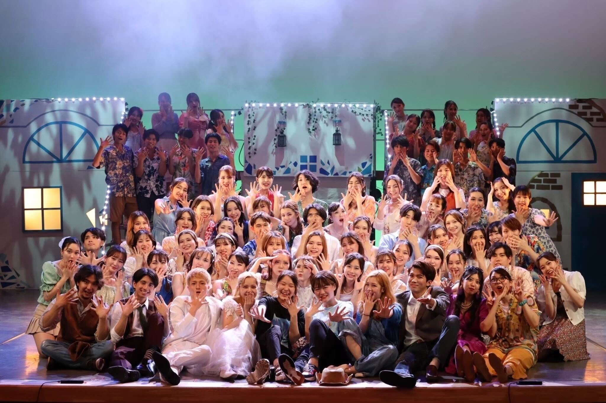
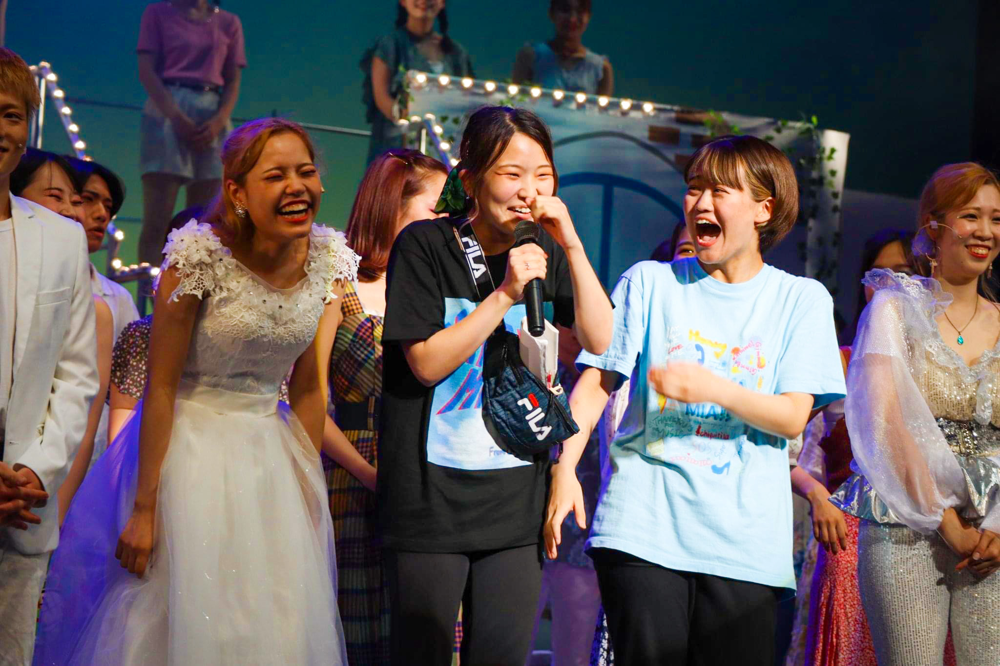
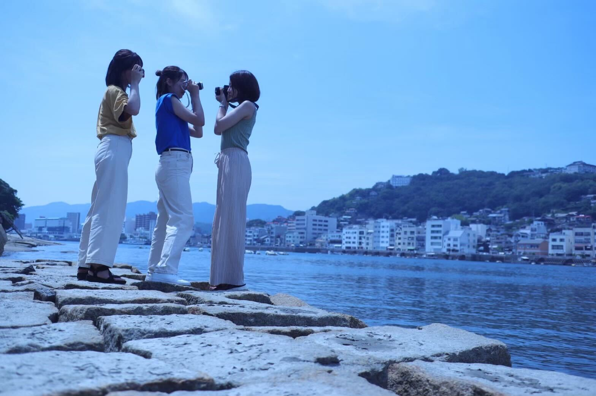
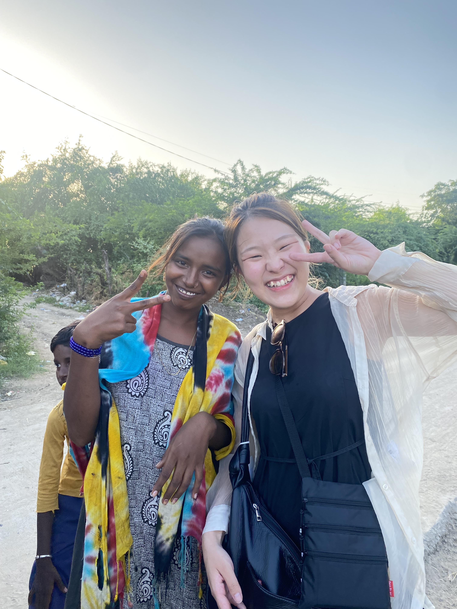

とにかく、新しいことが大好きな猪突猛進型飽き性
数えきれない趣味のうち、いくつかをここに紹介していきます！
趣味①「ミュージカル」
早稲田大学で最も古く大きなミュージカルサークル「オムニバス」で、統括をしていました！
大学時代の120%をサークルに捧げ、週7日24時間「学生会館」というサークル専用の施設で騒いで仕事した4年間。
あの生活をしていて、留年をしなかったのは自分でも奇跡だと思っています・・・
劇団四季のWickedに憧れ中学校でミュージカルをはじめ、高校2年生でありがたいことに都大会主演男優賞をいただき（男性役だったので・・・）、大学からは裏方に転向！
青春の全てをミュージカルに捧げてきた女です！！！！
今でも年に5回は帝劇や劇団四季を観にいきます！
趣味②「旅行とカメラ」
とにかく、"新しい場所で新しい景色を見ること"が大好きです
相棒である一眼レフに、1970年代に陸上自衛隊で使われていたオールドレンズをつけて日本中の景色を撮っています！
大学時代には、カメラ好きの女友達と、京都やら尾道やら銀山温泉やら草津やら、冗談抜きに47都道府県制覇したのでは・・・？ってくらい旅行に行っていました
海外だと東南アジアも10日間かけて回ったり、カメラがあるとまぁ旅行が楽しい！！
趣味③「車とドライブ」
父親が、マフラーやエンジンをいじるほどの車好きで、教育の一環で頭文字Dを読まされて育ちました。
英才教育のおかげで、気づいたらマニュアルの免許をとっていました。
憧れの車はmazda RX-7です。新卒の給料だとひっくりかえっても買えないので頑張ります。
ドライブが大好きで、北海道を東西に車で横断しました！
運転手必要なときにはいつでも呼んでください〜〜〜！
趣味④「バレーボール」
中学1年生の時に漫画「ハイキュー!!」にハマり、中学はバレーボール部でセッターをしていました
（バレー経験者集めて体育館で試合したいなって画策してますいたら教えてください・・・！）
今も、年に1~2回バレーボールの公式戦を観にいきます！
ネーションズリーグが始まりましたね！！！今まさしくやってますよ！！！
全国のHUBで中継してるのでぜひ一緒に観にいきましょう！
趣味⑤「文化人類学」

大学では文化人類学を専攻し、インドの宗教と先住民族について研究していました
去年10月には、研究の一環でインドグジャラート週アメーダバードの田舎町で、フィールドワークしてきました！
インド！！！全てが常識外の国！！！本当に楽しかった！！！！！！
自分の常識を疑うような海外経験大好きなので、これからも積んでいきたいと思ってます！
実は留学してました！
高校の時に、１年間ニュージーランドに留学をしていました
Wellington, Paraparaumu, Raumati Beach, Kapiti Collegeにいました
最初に名前を聞いた時には「本当に英語圏か？？？？？」となりましたが、先住民族マオリの文化が残った本当に素敵な街でした
ニュージーランド、死ぬまでに一度は行くべき国です！！！！！
星空と自然が世界一綺麗な国でした！おすすめです！
趣味⑥「XXXXX」
新しい趣味をこれからも見つけていきたい！
誰よりも新しいことを経験して120歳くらいで往生したいと思ってます・・・！w
野球でもガーデニングでも茶道でも、おすすめの趣味がある方はぜひ教えてください！